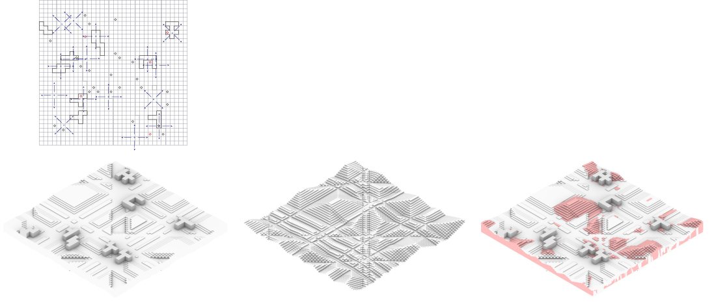

Electronic House
An Active and Ballardian Communal Work-Live Experiment
Laudeman, Sara M; Li, Yuhang; McClelland, Marta
ARCH 8866 LS | Spring 2020 | Georgia Institute of Technology
The psychotropic house, as in J.G. Ballard’s “The Thousand Dreams of Stellavista,” serves as the primary motivation for this project. The Electronic House suggests that the relationship between the inhabitants and the architecture is a game which then creates spaces of interplay and internal tension. In order to frame this discussion, the project uses the idea of a work/play artists' commune. The residency length is selected by inhabitants and ranges between 4 weeks and one year. The occupants and their visitors act within, react to, and interact with the architecture around them on a daily basis. In this project, both short-term and long-term patterns of use are considered as motivators for the architecture.
The architecture is pixelated on a 1m x 1m scale. This cellular grid becomes the architectural "brain" of the project. There are a handful of important terms to define in the context of this exploration. First, clusters are created from a cellular grid (architecture) based on agent (inhabitant) actions as well as the occupancy level. These clusters are then transformed across the grid, or playing field according to a set of rules. There are rules for the effect that agents have, rules for the effect that clusters have, and rules for the way the house itself interacts within the field. This creates spaces of constructive awkwardness and direct tension, causing the inhabitants and the architecture to work with and against one another in turn. Practically , this means that the house is constantly shifting as it responds to the habits, patterns, and uses of its inhabitants. This means that there might be fewer issues of lost space, and that the issues of habit and play (or memory and fantasy) are balanced against one another.
In the formative phase of the project, different terms are defined as the architectural brain works to create a landscape for communal living. The cells are the individual grid elements of the playing field. The entirety of the architecture is composed based on these cells. Clusters are highlighted groups of cells, which are referred to as activated in this phase. Clusters are created based on agent, or inhabitant, actions and motions. That is to say that the formation of clusters is movement given form based on the behavioral patterns of inhabitants. Each cluster then functions under a set of seven major rules. Clusters can combine, break apart if they become too large, and absorb smaller “useless” clusters below a certain size threshold. Agents can cause clusters to copy themselves, mirror themselves, or perform a hybrid copy/mirror action. Finally, clusters move across the playing field in orthogonal or diagonal paths, which themselves are visualized through the field reactions. Clusters near one another will then move towards each other while other clusters move towardsareas of lower density in a pseudo-flock interaction.

Developing a diagrammatic relationship is only half of the process. To bring these two-dimensional fields into architectural concepts, the project relies on another dichotomy. Drawing from the ideas of urbanism, Waddington’s creodes, and Gould’s intermediate forms, two surfaces are developed: an urban form, which contains the clusters as they are constructed of cells, and a landscape form, which creates dramatic hills and valleys from the same cells.
These forms can be taken to represent the memory and fantasy components of the machine respectively. When combined, the urban landscape form provides a work-play balance between useable plateaus – which map directly to the white space referenced before – and the playful landscape features which represent a more fantastic landscape which disrupts the regular, urban patterns and relationships of plateaus and boulevards. The house uses these irregularities to counter agent interactions by disrupting the urban plateaus.
- Tendency: The space transitions from fewer large plateaus to more small ones. As movement rails become more distant from one another, they split into more small boulevards.
- Interaction: As clusters converge, merge, and split, the boulevards, plazas, and plateaus combine, diverge, and shift to create areas of different interactions.
- Characteristic: The lower (more private) spaces have less exposure than the higher (more public) spaces. The boulevards function as connections between the two with direct exposure to the clusters.
As the clusters move, they drag the boulevards with them, functioning as transient anchors for the landscape. Tracking the relationships between plazas and plateaus over one year shows the agglomeration and decay of spaces in direct response to cluster movement and inhabitant activities.

Clusters and plateaus are predefined features of the landscape and attract groups of individuals. However, they also transform over time. Boulevards between clusters, plateaus, and plazas are full of potential. Since clusters move extremely slowly, the boulevards often become spaces for spontaneous gatherings and temporary activities.
Fantasy: all registered deviations from the memorized pattern. These fantasies create vertical modification of the landscape. Flat surfaces are interrupted by hills as they emerge. This results in geometric vagueness of the hills, allowing unexpected scenarios and uses of space. In this way, work spaces become play spaces and vice versa.
In order to develop a cave-like landscape and prevent interruption with columns, the project utilizes a spaceframe structure with a triple-layer grid composed of 2m x 1m modules. The structural system supports the operable cell mechanisms and the cells themselves. An accessible basement level allows for maintenance, and the façade is composed of rotating panels that capture sunlight and store the energy in the façade cells. The clusters and cells move within this framework, creating variations within the forms discussed above. Clusters vary in height to accommodate different uses, while plateaus and plazas shift slightly in 6” increments to allow easy access. The cells are supported by scissor lifts, which can raise and lower the surface readily. Floor cells have integrated walls which slide to allow access to the interior of clusters, while overhead cells house lights behind frosted glass panels.

The Electronic House subverts the expectations of a traditional living situation on many levels. From the communal living aspect to the transient physical states, the House forces its inhabitants to adapt even as it responds to those adaptations and shifts again. This project attempts to connect disparate concepts and shifting expectations from both the inhabitants and the architecture. Through this unconventional approach, the Electronic House challenges the notion of passive architecture. It combines the modernist ideas of adaptable buildings with advanced capabilities of 21st century technologies and it explores solutions for underoccupancy, adaptability, and transformability of the built environment. The project attempts to prove that through interaction, learning, and adapting architecture and inhabitants - as two equal entities - can create spaces full of unexpected conditions where memories and fantasies coexist.